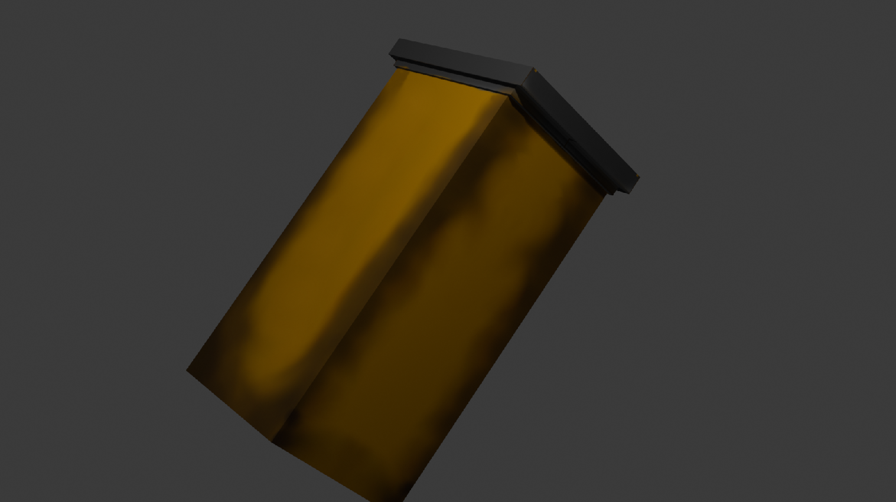

Price: 19.99 USD
Description: The Resident Evil Rose Arm Flask Keychain.
The arms of Rose. In Resident Evil 8, the player (Ethan Winters) finds a flask containing Rose’s arms after a major story event. This keychain recreates that iconic item.
Back to Products